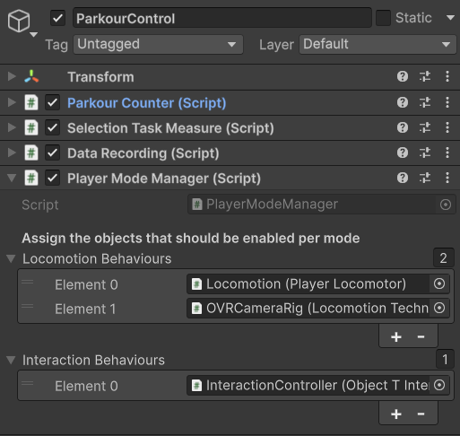

Airbending Locomotion + Interaction in VR Parkour
Final project page (paper-style) — Ajay Jose
Abstract (quick version)
I built a VR locomotion + interaction system inspired by airbending (Avatar: The Last Airbender). The final technique uses hand tracking: left-hand tilt controls horizontal movement and direction, and a deliberate right-hand swirl triggers a single upward jump. The parkour course and the object-interaction tasks in the provided course repository were originally built for a first-person OVRCameraRig player, so a large part of the work was integrating my third-person “AvatarRoot” body back into that pipeline. This page explains the motivation, early prototypes, the final implementation, the hardest challenges, and a small user study plan.
1. Introduction & Motivation
Most VR movement is still thumbstick-based. It works, but it does not feel like you are “doing” the movement. I wanted something more embodied and playful: move like an airbender, using hands, while still being able to finish the course parkour track and the interaction tasks.
I also tried to remember and dig up all the things previous years’ students did, not just to be inspired but to do something that is different from what they have done.
2. Problem Statement
The main issues I wanted to address:
- Typical locomotion is functional but not very expressive or in-world.
- Hand tracking input is noisy (hands move even when you do not mean to move).
- Comfort: unstable backwards motion and bouncy vertical motion can become uncomfortable quickly.
- Integration: the course logic (banners, coins, tasks) assumes the OVRCameraRig is the player, but in my setup the physical player is a separate AvatarRoot.
Goal: design a hand-driven locomotion + interaction technique that is predictable, comfortable, and integrates cleanly with the existing parkour system.
3. Solution (early versions → final system)
3.1 Early idea (Week 4): Air scooter from Avatar: The Last Airbender
This week was mostly spent on thinking and trying to work out what locomotion technique I want to use for the project.
After a few days of planning and scrapping a ton of stuff I came to finalize the idea below for my locomotion technique.
Air Scooter from Avatar: The Last Airbender
I thought about how to translate this into a locomotion technique for 2 days and finally came down to the controls below.
- Right hand: rotate it in circles to lift the ball up. It will basically be like flappy bird where the rotation pushes the ball up but as soon as you stop it slowly starts coming down.
- Left hand: when it is held flat there is no movement. But if I tilt it to the front the player moves to the front, back means back, left and right as well. It is not just those 4 but combinations also work.
So the player needs to use both hands to guide Aang on top of the AirScooter to collect all the coins.
An idea of the movement is shown below.
The coming week I will start with implementation of this technique.
3.2 Week 5: Getting started with Airbending (or rather Unitybending)
This week was finally “hands on” instead of just thinking.
I started by forking and cloning the VR locomotion parkour repo from our course. The instructions said “open the VRParkour folder as a Unity project”, but when I did that and hit Play, the scene was completely empty.
After poking around a bit I realised I had just opened a blank scene. The real content is in:
Assets/Scenes/ParkourChallenge.unity.
Once I opened that, suddenly the whole level, coins, banners, etc. showed up and actually ran on the Quest.
The next step was to prepare the scene for my Avatar air scooter idea. The original setup was first person, with the camera rig basically being the player. I wanted a third person view where the camera follows a character sitting on a ball of air.
So I:
- Created an AvatarRoot object to act as the real player body in the world.
- Made two children:
- Airball – a white sphere that Aang will “sit” on.
- avatar – a simple cylinder as a placeholder body.
- Added a Rigidbody and a CapsuleCollider to AvatarRoot and made this the only solid collider for the avatar. The ball and cylinder are just visuals.
- Gave the Capsule a NoBounce physics material so it doesn’t fly into the sky every time it touches the ground.

- Wrote a small script so that OVRCameraRig no longer moves by itself but instead follows AvatarRoot from behind with an offset, like a third-person camera.
public class ThirdPersonFollow : MonoBehaviour
{
public Transform avatarRoot; // the body we follow
public Transform hmd; // CenterEyeAnchor
public Vector3 offset = new Vector3(0f, 1.6f, -3f);
public float followLerp = 10f;
void LateUpdate()
{
if (!avatarRoot || !hmd) return;
// Use only the HMD's yaw so the camera stays behind the avatar
Vector3 euler = hmd.rotation.eulerAngles;
Quaternion yawOnly = Quaternion.Euler(0f, euler.y, 0f);
// Desired camera position
Vector3 targetPos = avatarRoot.position + yawOnly * offset;
// Smoothly move the rig there
transform.position = Vector3.Lerp(
transform.position,
targetPos,
1f - Mathf.Exp(-followLerp * Time.deltaTime)
);
// Look at the avatar from that position
transform.rotation = Quaternion.LookRotation(
avatarRoot.position - transform.position,
Vector3.up
);
}
}
By the end of the week I had:
- The original parkour scene running,
- A separate physical body (AvatarRoot) rolling through the world,
- A third person camera that follows this body,
- And a basic “Aang on a ball” setup ready to connect to my air scooter locomotion script next.

The actual hand gesture locomotion still needs work, but the foundation (project structure, avatar, colliders, camera) is finally in place.
3.3 Week 6 & 7: Teaching the Avatar to Follow Me (or me to follow it)
This week I finally started working on the LocomotionTechnique script itself instead of just moving GameObjects around like Lego. It was fun to test things out on the already existing repo. Must have taken a lot of hours to make this entire thing. Just thinking about it made me motion sick.
In the original project the camera rig was the player. In my version the real body is AvatarRoot — a capsule collider rolling through the world with a cylinder (avatar) and a sphere (airball) as placeholders.
I also moved my third-person follow logic into LocomotionTechnique:
avatarRootandavatarBodybecame public fields on the script.- I added a
cameraOffsetandfollowLerp. - In
LateUpdate()I started repositioning theOVRCameraRigbehind the avatar instead of letting it move on its own.
LateUpdate vs Update
I wasn’t sure at first where this follow logic should be added, so I went down a small rabbit hole about Unity’s update order and discovered LateUpdate(). Unity calls Update() on everything first, and then LateUpdate() afterwards. Since my avatar movement happens earlier in the frame, putting the camera follow code in LateUpdate() means the avatar has already finished moving, and then the OVRCameraRig snaps in behind it. That way the camera feels more like it’s reacting to the final position of the avatar each frame.
Note:
This is also where I first learned the word yaw. Until then everything was just “tilt” in my head.
HMD yaw mistake (the orbiting problem)
The very first version followed the HMD yaw: every time I turned my head, the whole rig tried to stay behind me. It looked fine when i tested it in my laptop’s Unity game mode. But in VR it felt like my avatar was orbiting me whenever I looked to the side. Not great, and also confusing because I was only trying to look around, not drag my whole body with me.
So I changed it to:
- The avatar is the “real” direction in the world.
- The camera rig is fixed behind the avatar (like a game).
- My head is freely moving inside that rig.
Technically that meant something like this:
// Compute desired camera rig position behind the avatar
Vector3 targetPos =
avatarRoot.position
- avatarRoot.forward * Mathf.Abs(cameraOffset.z)
+ Vector3.up * cameraOffset.y;
// Smoothly move rig position
transform.position = Vector3.Lerp(
transform.position,
targetPos,
1f - Mathf.Exp(-followLerp * Time.deltaTime)
);
// Smoothly align rig yaw with avatar yaw
Quaternion targetYaw = Quaternion.Euler(0f, avatarRoot.eulerAngles.y, 0f);
transform.rotation = Quaternion.Slerp(
transform.rotation,
targetYaw,
1f - Mathf.Exp(-followLerp * Time.deltaTime)
);
Before
After
Locomotion (first prototype): left-hand tilt movement
With the camera behaviour in a decent spot for now, I finally started on the actual “airbender” part: left-hand tilt movement.
Left Hand Idea
Hold your left controller straight and flat in front of you like you’re steering an invisible scooter, and tilt to move. I have never driven movement from a rotation like this before, so this part was pretty experimental and I was doubtful it would even work.
I added a calibration for a “neutral” pose:
CalibrateLeftNeutral()stores the current left-hand rotation as neutral.- X button triggers recalibration.
- For a short
neutralLockDuration, movement is frozen.
The goal was to let me hold the controller in whatever is comfortable (and also because during testing i was rotating so much and getting dizzy).
Then each frame I roughly do:
- Get the left controller rotation.
- Ask Unity for the controller’s current “up” vector from that rotation.
- Compare it to the neutral up vector in the XZ plane.
- Treat that difference as a tilt value and feed it into movement.
I don’t fully understand all the maths under the hood yet, but this was enough to get a first prototype where tilting my left controller actually moved the avatar around.
Major roadblock
I wasted around 2–3 days because even when I couldn’t see my left hand, my avatar was still moving. It made no sense to me.
Only by accident I noticed that my hand was still just at the edge of my vision. I was keeping my hands on my lap and the Quest cameras could still see them, even though I couldn’t.
I felt dumb and relieved at the same time.
To fix it, I added “activation zones” around the head:
- The left controller has to be inside a small 3D box in front of the chest.
- Outside that box, tilt is ignored.
Below you can see when my hand is in the zone (very green) the avatar moved, otherwise it won’t.
The movement still felt wobbly. Sometimes a tiny tilt did more than I expected, sometimes less. But at least the basic idea of Aang on an airball that I can steer was visible now.
3.4 Winter Break: When physics starts messing with my hands
Last week I finally got the AvatarRoot + camera setup working and a very baby version of left-hand controller tilt movement. It moved, it kinda listened, and it also made me dizzy if I tested too long. So for the next weeks the goal was: make this feel less like a rollercoaster ride and more like something I can actually have fun with.
Also, very important change that happened here: I switched from controllers to hands.
Goodbye controllers, hello hand tracking
Until now I was only using the Quest controllers. All the “tilt” logic was reading controller rotation. That was easier for me to understand at first.
But after pitching my idea in class, the professor asked me plainly why I am not using just hands. That made me think — honestly till then the idea did not even come to me. So I turned on hand tracking in Oculus/OVR settings, and added OVRHand leftHand and OVRHand rightHand references to my LocomotionTechnique script. Then I changed the rotation code so that if the hand is tracked with good confidence, I use leftHand.transform.rotation instead of the controller’s rotation.
I kept the controller logic as a fallback because hand tracking can randomly fail (lighting, weird poses, etc).
I also started using pinch strength to detect a gesture. If all four non-thumb fingers on the left hand have pinch strength above a threshold, I count that as a “left fist”. I hooked that into calibration:
left fist → CalibrateLeftNeutral() → reset movement
So now I don’t need to click the X button every time.

The first time the VR skeleton hands showed up and the avatar responded to my actual hand tilt, it felt pretty magical. Also slightly cursed, because tracking is not always stable and honestly very janky.
From here on, when I say “left hand / right hand”, I mostly mean the real tracked hands. Controllers are still there as backup, but the main idea is now controller free airbending.
Left hand: the drunk phase
The core idea stayed the same: hold left hand in front, tilt, avatar glides.
In practice this turned into: why does the avatar act like a typical person coming out of a bar at 10pm on a saturday??
I tried to make the movement feel more “analog” and smooth. So I added:
- deadzone for tiny tilts
- tiltGain to exaggerate angles
- maxSpeed so it doesn’t fly away
- acceleration/drag so it glides instead of snapping
It worked, but it was super moody. Some days a tiny tilt would suddenly send the avatar off faster than expected. Other times I tilt a lot and it still felt lazy. The numbers were never stable enough for me to trust.
This is where I understood “game feel matters”. The maths can be correct and still your brain goes “nope”.
Hand tracking also made the random movement problem worse because hands are always doing something: resting on lap, drifting out of view, coming back in, etc. Even if I don’t mean to steer, the system is like “ah yes, input”.
So I wrote to myself: I think I’m trying too hard to make it physically clever. I should first make it predictable and game-like. Only then I can add fancy stuff again.
Right hand: We have a lift off (and why it sucked)
At the same time I started experimenting with right hand for vertical movement. The idea is simple: avatar sits on airball, so right hand should create “air lift”.
First idea: swirl your right hand like a cowboy spinning a rope, build up lift. I tracked right-hand velocity, how quickly the velocity direction changes (how “circular” it is), and fed that into a lift gauge.
Vector3 prevPos;
float liftGauge = 0f;
Vector3 prevVelDir = Vector3.forward;
void Update()
{
// 1) estimate right-hand velocity from position change
Vector3 pos = rightHand.transform.position;
Vector3 vel = (pos - prevPos) / Mathf.Max(Time.deltaTime, 1e-4f);
prevPos = pos;
float speed = vel.magnitude;
if (speed < 0.05f) return;
// 2) how “circular” is the motion? (direction changing fast = more swirl)
Vector3 velDir = vel.normalized;
float ang = Mathf.Acos(Mathf.Clamp(Vector3.Dot(prevVelDir, velDir), -1f, 1f));
float angPerSec = ang / Mathf.Max(Time.deltaTime, 1e-4f);
prevVelDir = velDir;
// 3) swirl strength + gauge (build up + decay)
float swirlStrength = Mathf.Clamp01((speed * angPerSec) / 5f); // 5f = random scale
liftGauge = Mathf.Clamp01(liftGauge + swirlStrength * Time.deltaTime);
liftGauge = Mathf.MoveTowards(liftGauge, 0f, 0.6f * Time.deltaTime); // decay
}
void FixedUpdate()
{
// 4) apply smooth upward acceleration based on gauge
float upAccel = liftGauge * maxLiftAccel;
avatarBody.AddForce(Vector3.up * upAccel, ForceMode.Acceleration);
}
In my head this was cool: charge air in a circle and the ball softly rises.
In reality it turned into a tiny trampoline. Even small accidental right-hand motion kept the gauge slightly above zero, which meant the avatar was always bouncing a little bit. When combined with left-hand movement it became: forward – boing – forward – boing. Like climbing an invisible staircase. With a headset on, this is not funny after 10 seconds.
Somewhere in the middle I also tried a side experiment: right fist to charge and open to release an upward impulse. It worked but felt wrong. It was tiring and it looked strange. So I deleted it.
Note to future me:
It’s ok to throw away ideas. The code is not sacred.
After a few rounds of this I basically had a comfort check. In VR, weird physics + head movement + camera movement = nausea. So I stopped trying to be clever and decided to make things simple.
3.5 Pre-Christmas cleanup: making it feel like a game
Left hand: from analog mess to two clear states
The analog speed idea was cool in theory, but in practice it always felt inconsistent. So I simplified it into basically a switch:
If tilt is below threshold → no movement
If tilt is above threshold → move at a fixed speed
Now it behaves more like “I am moving” vs “I am not moving”. Instantly more easy to use.
I also changed how I decide direction. Earlier I was thinking too much in world axes. Now I map movement relative to where I’m facing (and later also head yaw, see below). So tilt forward moves forward, tilt right gives clean strafe right, diagonals actually feel like diagonals.
I still kept a small physics-y part for feel, so it accelerates into motion and glides a bit instead of snapping instantly. But overall the important part is: it’s predictable now.
// LEFT HAND
// 1) measure tilt (compare current hand "up" vs neutral "up" on XZ plane)
Vector3 upNow = leftHandRotation * Vector3.up;
Vector3 tilt = new Vector3(upNow.x - upNeutral.x, 0f, upNow.z - upNeutral.z);
float tiltMag = tilt.magnitude;
if (tiltMag < moveTiltThreshold)
{
targetHorizVel = Vector3.zero; // OFF
}
else
{
Vector3 tiltDir = tilt.normalized;
// 2) get forward/right based on where I’m facing (yaw only)
Quaternion yawOnly = HeadYawOnly(); // from HMD
Vector3 fwd = (yawOnly * Vector3.forward).XZ().normalized;
Vector3 right = (yawOnly * Vector3.right).XZ().normalized;
// 3) convert tilt direction into move direction
float f = Vector3.Dot(tiltDir, fwd);
float r = Vector3.Dot(tiltDir, right);
Vector3 moveDir = (fwd * f + right * r).normalized;
targetHorizVel = moveDir * moveSpeed; // ON (fixed speed)
}
// 4) smooth acceleration
horizVel = MoveTowards(horizVel, targetHorizVel, moveAccel * dt);
avatarBody.linearVelocity = new Vector3(horizVel.x, avatarBody.linearVelocity.y, horizVel.z);
Backwards walking = discomfort, so I nerfed it
Fast backwards movement in VR feels horrible. So I added a comfort rule: if the intended direction is mostly backwards, multiply speed by a backwardSpeedMultiplier (like 0.4). Straight back is intentionally slow. Diagonal back can still be ok.
It sounds like a tiny detail, but it reduced a lot of weird movements that are not even intended.
Right hand: air jumps instead of continuous lift
Big change on the right hand: I scrapped the lift gauge and made it discrete.
New idea: one strong swirl / whip motion → one clean upward pop. Then a cooldown so you can’t spam it.
Under the hood I still track hand velocity and check if it’s fast enough, direction changes fast enough, and mostly horizontal. If it qualifies, I apply an impulse:
avatarBody.AddForce(Vector3.up * swirlLiftImpulse, ForceMode.VelocityChange);
Then I clamp max upward velocity so I don’t launch into VR space. The result feels much nicer. Nothing happens when I casually move my right hand. One deliberate swirl gives one jump.
Turning corners without fighting the track (head yaw helps)
One sneaky problem with third-person movement on the parkour track is corners. If the road turns 90 degrees and my movement reference is only avatar forward, then I end up strafing down the new road instead of moving forward.
So I let head yaw help here. When I look into the new road segment, head yaw changes. I use that yaw to decide what “forward” should be for the tilt mapping. So I can look into the next segment, tilt forward again, and the avatar moves into the turn naturally.
It’s basically: “where I look is where I mean to go next”. The camera still stays behind the avatar, but the direction mapping respects my attention, which made 90° and 180° turns feel way better.
3.6 January (First Half): finishing locomotion + making the level recognize me
After all the work on left-hand and right-hand gestures, I realised something slightly embarrassing: the parkour course didn’t care at all about my AvatarRoot. It still thought the OVRCameraRig was the player.
So even though I could move around and do my airbending jumps, the game logic was like: “cool story bro, who are you?” No timer, no coin pickups, banners didn’t react, and those mini interaction tasks never started.
This week was basically me trying to make the level recognise my avatar again.
What the original project expected
There’s a script called ParkourCounter that reacts when the player hits stuff:
- banners → start / change stages
- coins → count them
- task triggers (tagged
objectInteractionTask) → show the UI and start the mini task
Inside my LocomotionTechnique there’s already a function for this:
AvatarTriggerEnter(Collider other)
In the original repo, the camera rig itself was moving and touching those colliders. So AvatarTriggerEnter() would get called naturally.
But in my setup:
- the thing that actually moves and collides is
AvatarRoot(capsule + rigidbody) - the
OVRCameraRigis basically a follower camera now - which means the rig never touches banners/coins/tasks
So the parkour logic didn’t break… it just never got triggered.
TriggerRelay: the tiny script that fixes everything
I didn’t want to rewrite the whole parkour system. I just wanted to forward collisions from my physical body to the script that already knows what to do.
public class TriggerRelay : MonoBehaviour
{
public LocomotionTechnique locomotion;
void OnTriggerEnter(Collider other)
{
if (locomotion) locomotion.AvatarTriggerEnter(other);
}
void OnCollisionEnter(Collision collision)
{
if (locomotion) locomotion.AvatarTriggerEnter(collision.collider);
}
}
And I also added a debug line inside AvatarTriggerEnter() so I could see what I’m hitting:
Debug.Log("AvatarTriggerEnter with: " + other.name + " tag: " + other.tag);
At first my console spam looked like:
LeftHandZoneVisual- random floor tiles
- controller prefab stuff

But never StartBanner, Coin_xx, or ObjectInteractionInitiator...
That’s when I realised this wasn’t a trigger relay problem. This was a layers problem.
Layers: parkour sees me, ground doesn’t (and vice versa)
The parkour objects live on a custom layer called locomotion.
The ground is on a different layer.
My AvatarRoot was on Default. So:
- it collided with the ground
- but based on the collision matrix, it didn’t interact with the locomotion layer.
Then I tried putting AvatarRoot on the locomotion layer.
It worked… for 2 seconds.
Banners started triggering, and then my avatar fell through the ground.
So the situation was:
- Default layer → ground works, parkour ignores me
- Locomotion layer → parkour works, ground ignores me
Lovely.
Two bodies: one for physics, one for talking
The solution that finally made everything sane was: don’t force one collider to do two jobs.
So I split it:
1. AvatarRoot (main body)
- Layer: Default
- CapsuleCollider + Rigidbody
- Handles gravity, floor, walls, normal physics

2. BannerHitbox (child under AvatarRoot)
- Layer: locomotion
- CapsuleCollider set to Is Trigger
- Has TriggerRelay

Once I did this and hit Play, I finally saw:
AvatarTriggerEnter with: StartBanner tag: banner
And the scene actually responded:
- start banner disappears
- next banner appears
- coins spawn
- timer starts ticking

Coins and banners working again:
Bonus: Unity froze on Play Mode
While doing all this trial-and-error, Unity sometimes froze on:
Application.EnterPlaymode
A friend suggested:
- Edit → Project Settings → Editor
- enable “Enter Play Mode Options”
- disable Reload Domain + Reload Scene
It helped for a bit, but later I turned it back on because of side effects (static state not resetting). Still, it was a useful trick while iterating.
3.7 January (Second Half): Interaction Task (T-shape puzzle)
Last week I ended with: “I haven’t started the interaction task at all and it’s making me anxious.” Yeah… that anxiety aged like milk. Because the interaction task turned out to be two separate problems hiding behind one:
- How do I even start the task?
- How do I disable locomotion so I don’t drift away while trying to fit a T inside a hole like a stressed-out toddler?
This section is basically how I made the “T shape puzzle” work end-to-end:
- enter checkpoint → 2) pinch to start → 3) manipulate object → 4) pinch-hold to finish → 5) return to locomotion.
The “weird start block” was a trigger station (not a button)
I kept thinking there’s a physical start button I’m supposed to grab (because there is that tiny block sitting there). But in my build, grabbing it wasn’t realistic since my hands were already mapped to locomotion gestures.
So instead of fighting the tiny button, I made the checkpoint behave like a proper “VR station”:
- the checkpoint object is still a trigger volume (so it knows when I arrived)
- entering it only shows the UI (“Pinch to start”)
- pinch to start is the actual trigger (reliable, no UI clicking)

Important detail: I learned it the hard way that triggers can be annoying if no Rigidbody is involved.
So each initiator got:
- CapsuleCollider → Is Trigger = true
- Rigidbody → Use Gravity = false, Is Kinematic = true
Starting the task: pinch to make the two T objects appear
Logic:
- if I’m inside the station
- and I do an index pinch
- then start the task + switch mode to interaction
I also fixed a subtle bug: my older logic set isTaskStart = true immediately on entering the zone. That means timing could start before the task actually starts. I changed it to only start timing on pinch.
Core idea:
modeManager.SetMode(PlayerMode.ObjectInteraction);
selectionTask.isTaskStart = true;
selectionTask.isTaskEnd = false;
selectionTask.StartOneTask();
The most annoying part: locomotion wouldn’t stop
Even after starting interaction, my avatar was still moving because… of course it was.
I originally disabled “Player Locomotor”, but my actual movement logic is in my big custom script LocomotionTechnique attached to OVRCameraRig. So locomotion kept reading hand input and pushing the Rigidbody.
Fix:
- put
LocomotionTechniqueinsidePlayerModeManager → locomotionBehaviours[] - put interaction controller inside
interactionBehaviours[]
Now switching mode actually disables the right components. I also added a small “stop momentum” so the avatar doesn’t keep sliding after switching.

Interaction controls: make it feel POV-based, not world-based
The original swirl translation idea worked… but it was not precise.
So I mapped it like this:
Left hand (rotation)
- Left index pinch + rotate wrist
- rotation is adjusted in camera yaw space so it feels POV aligned
Right hand (translation)
- Right index pinch + tilt moves the object in XZ plane relative to my POV
- tilt forward = push away
- tilt back = pull towards me
- tilt right = move right
- Right middle pinch + lift/drop hand moves the object up/down (Y axis)
I also added smoothing + deadzone so tiny wrist noise doesn’t jiggle the object.
Finishing the task
I didn’t want a UI button. UI clicking in VR is pain and I already use hands for movement.
So I added: hold BOTH index pinches for ~1s to finish.
if (selectionTask) selectionTask.EndOneTask();
if (modeManager) modeManager.SetMode(PlayerMode.Locomotion);
One tiny change that made it so much better: hide the avatar
My avatar body was blocking the view while doing the puzzle. So during interaction mode I hide the avatar renderers (not the collider/rigidbody, just visuals). That alone made it feel way less claustrophobic.
Tiny bug fix but took me a day
My avatar didn’t come back after exiting the puzzle. I could move normally, but the body was invisible.
This happened because the interaction script got disabled before it could re-enable the renderers.
Fix:
OnDisable()
{
SetAvatarVisible(true);
}
4. Implementation Details (complex challenges)
This section is only about the parts that were actually hard (not basic Unity steps). I’m writing this in a “what was the annoying problem, what did I try, and what finally worked” style.
4.0 High-level architecture (what I actually moved vs what is just a camera)
The original repo treats OVRCameraRig as the player body. I changed that.
Final setup:
- AvatarRoot (real player body)
- Rigidbody + CapsuleCollider
- This is the thing that moves, collides with the world, and should “feel like the avatar”.
- OVRCameraRig (follower camera)
- No longer the physics player
- It follows behind AvatarRoot like a third-person camera.
- Airball + avatar mesh (visuals)
- Just visuals, no real collision.
Why this matters:
Once I separated “camera” from “body”, a lot of things broke in the repo (banners/coins/tasks) because the repo expects the camera rig itself to be the collider that triggers everything. Fixing that integration was one of the biggest parts of the implementation.
4.1 Camera follow: Update order + “orbiting” bug (why LateUpdate mattered)
The problem
At first I made the camera follow by using the HMD yaw (head direction). In VR this felt wrong:
- If I looked left/right, the whole rig tried to rotate and reposition.
- The avatar felt like it was orbiting me when I just wanted to look around.
What I tried (didn’t feel good)
- Following HMD yaw directly for the rig.
- “Smoothing harder” (higher lerp) — it just made it slower to orbit, but it still orbited.
Final approach (what worked)
- The avatar is the “real direction”.
- The camera follows AvatarRoot forward (avatar yaw), not my head yaw.
- The head is free to look around inside the rig.
Also, camera follow works best in LateUpdate so it reacts after movement for that frame is finished.
Core idea (simplified):
void LateUpdate()
{
// position camera behind the avatar
Vector3 targetPos =
avatarRoot.position
- avatarRoot.forward * Mathf.Abs(cameraOffset.z)
+ Vector3.up * cameraOffset.y;
transform.position = Vector3.Lerp(transform.position, targetPos, followLerp * Time.deltaTime);
// yaw align camera rig to avatar yaw (not head yaw)
Quaternion targetYaw = Quaternion.Euler(0f, avatarRoot.eulerAngles.y, 0f);
transform.rotation = Quaternion.Slerp(transform.rotation, targetYaw, followLerp * Time.deltaTime);
}
Why LateUpdate helped:
Unity runs Update() first on everything, then LateUpdate(). If AvatarRoot moves earlier in the frame, then the camera following in LateUpdate feels stable and “locked behind the avatar” instead of jittering.
4.2 Left-hand locomotion math: mapping tilt in POV space (yaw-only)
The goal
I wanted “tilt forward = move forward relative to how I’m facing”, not world axes.
So the final movement direction is computed in yaw space:
- Take yaw-only forward/right vectors (from head yaw).
- Convert hand tilt into a direction.
- Convert that direction into forward/strafe motion using dot products.
Why yaw-only:
Pitch/roll would make you accidentally move when you look up/down. Yaw-only keeps movement 2D and predictable.
Core mapping idea (conceptual):
Quaternion yawOnly = HeadYawOnly(); // from HMD
Vector3 fwd = (yawOnly * Vector3.forward); // flattened later
Vector3 right = (yawOnly * Vector3.right);
float f = Vector3.Dot(tiltDir, fwd);
float r = Vector3.Dot(tiltDir, right);
Vector3 moveDir = (fwd * f + right * r).normalized;
targetHorizVel = moveDir * moveSpeed;
This made cornering feel much better, because I can look into the next segment of the track and then tilt forward.
4.3 The “tilt forward makes me go backwards” bug (reference-frame drift) ✅
This is the bug you asked me to include.
Symptoms
Most of the time “tilt forward = move forward” worked, but on certain parts of the track (especially near raised pavement/edges) it sometimes:
- flipped,
- or skewed sideways,
- or felt like it went backwards even though I’m clearly tilting forward.
Why it happened (the real reason)
Two things were interacting:
- I originally stored my neutral pose in world space once (
upNeutralWorld). - Later I computed the current hand “up” using something like:
- controller/hand local rotation
- multiplied by OVRCameraRig rotation
But the OVRCameraRig rotation is not constant — I keep slerping it in LateUpdate to follow the avatar yaw.
When the avatar hits bumps/edges, tiny physics yaw disturbances happen. That changes the rig rotation slightly, so the “current up” rotates… but my stored neutral does not.
So the math thinks the tilt direction changed even though my real hand pose didn’t.
This gets even more sensitive if you then re-project movement again using HMD yaw forward/right.
What I tried (did not fully solve it)
- Tuning thresholds / deadzones: reduced it but didn’t remove the flip.
- Making movement more analog: actually made the drift more noticeable.
- Zeroing angular velocity every frame: helped but bumps still caused one-frame yaw twitches.
The robust fix: calibrate + compute tilt in HMD-yaw space
Instead of storing neutral in world space, I store it relative to the user’s yaw (yaw-only).
So neutral and current are always measured in the same stable frame.
Key idea:
LeftRotationYawSpace = Inverse(HeadYawOnly) * LeftRotationWorld- Store neutral up vector in yaw space (
upNeutralYaw) - Compute tilt in yaw space, then rotate back to world for movement
Code (simplified but complete idea):
Vector3 upNeutralYaw = Vector3.up;
Quaternion LeftRotationYawSpace()
{
Quaternion leftWorld = LeftRotationWorld(); // controller OR tracked hand in world
return Quaternion.Inverse(HeadYawOnly()) * leftWorld;
}
void CalibrateLeftNeutral()
{
Quaternion qYaw = LeftRotationYawSpace();
upNeutralYaw = qYaw * Vector3.up;
}
void ComputeMoveFromTilt()
{
Quaternion qLeftYaw = LeftRotationYawSpace();
Vector3 upYaw = qLeftYaw * Vector3.up;
// tilt relative to neutral, in yaw space
Vector3 tiltYaw = new Vector3(
upYaw.x - upNeutralYaw.x,
0f,
upYaw.z - upNeutralYaw.z
);
float tiltMag = new Vector2(tiltYaw.x, tiltYaw.z).magnitude;
if (tiltMag < moveTiltThreshold)
{
targetHorizVel = Vector3.zero;
return;
}
Vector3 dirYaw = tiltYaw.normalized; // yaw-space direction
Vector3 moveDirWorld = HeadYawOnly() * dirYaw; // back to world
float speed = moveSpeed;
// backward nerf: in yaw space, forward is +Z
if (dirYaw.z < -backwardDotThreshold)
speed *= backwardSpeedMultiplier;
targetHorizVel = moveDirWorld * speed;
}
After this change, bumps/rig rotation changes don’t corrupt the reference frame anymore, because both neutral and current are tied to head yaw.
4.4 Stabilizing physics on the track (raised pavement bumps)
The problem
The raised pavement edges caused tiny rotation impulses on the capsule. Even if they are small, in VR they show up as:
- sudden steering changes,
- camera feel drifting,
- or “why did the avatar yaw slightly there?”
Fix that actually helped
On AvatarRoot Rigidbody:
- Freeze Rotation X
- Freeze Rotation Y
- Freeze Rotation Z
I only want translation for this project. I don’t want the capsule to start yawing/rolling from impacts. This reduced random direction feel a lot.
(When I only did angularVelocity = Vector3.zero; it was still possible to get one-frame rotation spikes.)
4.5 Input noise control (hands are always doing something)
Hand tracking is always “alive”. Even resting hands on the lap can cause tiny rotations/position changes. Without strong gating, it becomes “ghost input”.
What I tried (not enough)
- Just a deadzone: still moved sometimes because hands never truly stay still.
- Lower sensitivity: then it felt unresponsive.
What worked (final combo)
- Activation zone: left hand must be in a small box in front of chest; otherwise ignore tilt.
- Deadzone: small tilts don’t count.
- Smoothing: accelerate into target velocity instead of snapping.
- Jump cooldown: prevents accidental repeat triggers.
- Backwards speed nerf: backwards movement is uncomfortable, so clamp it.
This is the difference between “cool idea” and “usable in VR”.
4.6 Right-hand vertical movement: continuous lift gauge vs discrete jump
What I wanted
Right hand should create “air lift”.
Attempt 1 (cool idea, felt terrible): continuous lift gauge
- Track hand velocity and how “circular” the motion is
- Build up a lift gauge
- Apply upward acceleration proportional to gauge
Why it failed:
Even small accidental motion keeps the gauge slightly above zero → the avatar keeps micro-bouncing.
In VR that becomes nausea very fast (felt like a tiny trampoline).
Final approach: discrete “air jump”
- Detect a deliberate swirl/whip motion
- Apply one upward impulse
- Add cooldown so you can’t spam
- Clamp max upward velocity
Impulse example:
if (SwirlDetected() && Time.time > nextJumpAllowedTime)
{
avatarBody.AddForce(Vector3.up * swirlLiftImpulse, ForceMode.VelocityChange);
nextJumpAllowedTime = Time.time + jumpCooldown;
}
This “clicky jump” felt much more like a mechanic and less like constant physics noise.
4.7 Integrating with the parkour repo: why coins/banners didn’t trigger (layers + relay)
The problem
After locomotion worked, I realized the parkour course didn’t care about my AvatarRoot. It still thought OVRCameraRig was the player. So:
- no timer start,
- no coins,
- banners didn’t react,
- tasks didn’t start.
What I tried (failed)
- Put AvatarRoot on the
locomotionlayer
→ banners worked, but I fell through the ground (collision matrix mismatch).
What worked: “two bodies” + TriggerRelay
Instead of forcing one collider to do everything, I split responsibilities:
- AvatarRoot (Default layer)
- CapsuleCollider + Rigidbody
- Collides with ground/walls normally.
- BannerHitbox child (locomotion layer, Trigger)
- Trigger collider only
- Exists only to talk to the repo triggers.
Then I forward collisions to the existing repo logic:
public class TriggerRelay : MonoBehaviour
{
public LocomotionTechnique locomotion;
void OnTriggerEnter(Collider other)
{
if (locomotion) locomotion.AvatarTriggerEnter(other);
}
void OnCollisionEnter(Collision collision)
{
if (locomotion) locomotion.AvatarTriggerEnter(collision.collider);
}
}
This let me integrate without rewriting the repo scripts.
4.8 Interaction mode: mode switching + “avatar didn’t come back” bug
The problem (1): how do I start the task reliably?
Originally I assumed a grab/button. But grabbing isn’t realistic because my hands are already used for locomotion gestures.
Fix: “VR station” approach:
- enter trigger → show UI “Pinch to start”
- pinch is the actual start action (reliable)
I tried a few other gestures, but pinch was the most reliable and least annoying.
The problem (2): locomotion wouldn’t stop
I first disabled “Player Locomotor”, but my real movement is inside my custom LocomotionTechnique attached to OVRCameraRig, so nothing changed.
Fix: PlayerModeManager toggles the correct scripts:
- disable locomotion behaviours (including LocomotionTechnique)
- enable interaction behaviours
- also kill momentum so I don’t drift while doing the puzzle
The problem (3): avatar didn’t come back after interaction
I hid avatar renderers during the puzzle (so my own body doesn’t block the view). But after finishing, sometimes the avatar stayed invisible.
Cause: the interaction script got disabled before it could re-enable renderers.
Fix: restore visuals in OnDisable():
void OnDisable()
{
SetAvatarVisible(true);
}
This was a tiny fix but it saved me from a lot of “why did my character vanish?” confusion.
4.9 Small “stuff we tried and dropped” (quick list)
A few experiments that were not worth keeping:
- HMD yaw driving the camera rig → caused orbiting and confusion (looking around moved the avatar/camera).
- Analog speed everywhere → looked cool in code, but felt inconsistent and moody with hand tracking noise.
- Continuous lift gauge → constant bouncing, nausea.
- UI button interaction start → unreliable in VR, pinch start was much better.
4.10 Summary of the final stable setup:
Final system stability came from treating everything as a reference-frame + noise problem:
- camera follows avatar in LateUpdate (stable third-person),
- left-hand tilt computed in yaw space and calibrated in yaw space (no drift),
- activation zones + thresholds + smoothing (stop false input),
- discrete right-hand jump with cooldown,
- two-collider setup for repo integration (physics vs triggers),
- mode switching that disables the actual movement script and restores avatar visuals safely.
5. Evaluation
I did a short user study style evaluation (10 minutes per participant). If you are reading this before I ran the study, the method and questionnaire below are ready to use, and the results section can be filled in after.
5.1 Method
Participants: N = 2 + me. Both of them were beginners to VR experience.
Setup: Meta Quest 2 with hand tracking enabled.
Procedure:
- Explain controls (about 5 minutes).
- TLocomotion task and Interaction task with headset
- Answer quick questionnaire (1–5 ratings) + short open questions.
5.2 Questionnaire (1 = low / 5 = high)
- How easy was it to understand the locomotion (how to move)?
- How much control did you feel over direction and speed?
- How physically tiring was the hand/arm input during play?
- How “Airbender-like” / immersive did the movement feel?
- How much discomfort / motion sickness did you feel (dizziness, nausea)?
- How easy was it to understand Interaction Task control?
- How physically tiring was the hand/arm input (tilt/gestures) during Interaction Task?
Open questions:
- What was the most confusing part?
- If you could change one thing, what would you change?
5.3 Results (fill in after the study)
Template:
- Average ease of learning: __ / 5
- Average control: __ / 5
- Average effort: __ / 5
- Average immersion: __ / 5
- Average discomfort: __ / 5
- Average time to complete: 4.5 minutes
- Key observations: (1) Many controls led to confusion at the beginning (2) Interaction task was tedious to do perfectly hence both of them closed it when it was 90 percent aligned. (3) Jumping mechanism induced motion sickness in 1 participant and hence continued without it.
- Most confusing part: Memorizing controls, especially Interaction one.
- If you could change one thing: Allowing to speed up and slow down if participants wish.
6. Conclusion
Overall, the system mostly achieved what I wanted. The final left-hand tilt locomotion is predictable, and mapping it to HMD yaw made it usable on corners. The discrete right-hand jump was much more comfortable than continuous lift. The biggest technical challenge was not the gesture math, but integrating a third-person AvatarRoot back into a first-person parkour pipeline.
Main takeaways:
- Comfort beats clever physics: “correct” motion can still feel bad in VR.
- Hand tracking needs gating + thresholds + smoothing to avoid accidental input.
- Integration problems (layers, collision matrices, repo assumptions) can be harder than the locomotion algorithm itself.
7. Video
Below you can see two of my friends who participated in the user study doing their runs:
Appendix A: Controls cheat sheet
Locomotion mode
- Left hand tilt (inside activation zone): move (direction mapped to HMD yaw).
- Right hand swirl: jump (one impulse, cooldown).
- Left fist / pinch gesture (if enabled): recalibrate neutral.
Interaction mode
- Index pinch: start task.
- Left pinch + rotate wrist: rotate object.
- Right pinch + tilt: move object in XZ.
- Right middle pinch + hand up/down: move object in Y.
- Hold both index pinches ~1s: finish task and return.
Appendix B: Using AI (ChatGPT) during the project
I used ChatGPT mainly as a debugging and explanation partner when I got stuck on vector math, Unity update order, and organizing scripts (mode switching, collision relays).
Where AI helped:
- Explaining yaw-only mapping and camera-relative movement.
- Suggesting small utility scripts quickly (trigger relays, state checks).
- Helping me write clearer explanations for the blog when I was confused.
What did not work well:
- Some suggestions were technically correct but felt bad in VR (comfort can’t be predicted from code alone).
- Some proposed fixes did not match the repo’s layer/collision assumptions, so I still needed a lot of testing.
My takeaway: AI was best as a pair-programmer and rubber duck, not as autopilot. The final design choices came from testing in-headset.